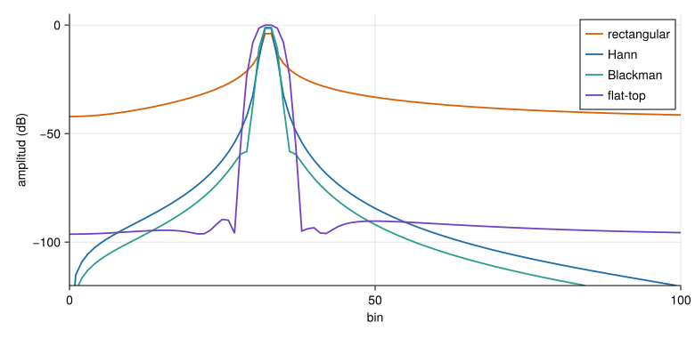

La transformada de Fourier descompone una señal en sinusoides. En vibraciones es la herramienta que convierte un registro temporal en lo que se interpreta: ¿a qué frecuencias vibra la estructura y con cuánta energía? Pero un registro real es finito, discreto y ruidoso, y esos tres hechos tienen consecuencias que hay que dominar: la resolución en frecuencia, la fuga espectral (leakage), las ventanas y el aliasing. Esta página explica la teoría y esas consecuencias; la práctica con registros reales y el método de Welch está en M3.5–M3.6.
NotaCómo se lee esta página
Tiempo orientativo: unas 4 horas. Nivel: intermedio. Tres capas: intuición (laboratorio de fuga y ventanas), fundamento (series, transformada, DFT y sus propiedades) y aplicación (el edificio de tres plantas).
Objetivos y prerrequisitos
Objetivos. Al terminar esta página sabrás:
escribir la serie de Fourier de una señal periódica y enunciar la relación de Parseval;
pasar de la transformada continua a la DFT y calcular la resolución \(\Delta f=f_{\mathrm s}/N\) y la frecuencia de Nyquist;
explicar la fuga espectral y escoger una ventana comparando su ganancia coherente, su ancho de banda de ruido y sus lóbulos laterales;
distinguir resolución (la da la duración del registro) de interpolación (la da el relleno de ceros);
escalar correctamente un espectro de amplitud y una densidad espectral de potencia;
relacionar la DFT con el análisis de un registro de una estructura.
Prerrequisitos.M2.4 (transformada de Laplace) y M2.7 (muestreo y aliasing). M2.1.6 para la DFT como diagonalización de las circulantes.
Teoría breve
M2.5.1 Series de Fourier
NotaUn poco de historia: de Gauss a Cooley y Tukey
Según el resumen histórico de la Wikipedia en inglés, Gauss usó hacia 1805, sin publicarlo, un método parecido al de la FFT para interpolar las órbitas de los asteroides Pallas y Juno a partir de observaciones, aunque no analizó su coste. Cooley y Tukey redescubrieron de forma independiente estos algoritmos y publicaron en 1965 una versión general (válida para longitudes compuestas, no solo potencias de 2) que mostraba el coste \(O(N\log N)\)(Cooley y Tukey 1965). Que Gauss se les había anticipado lo documentan Heideman, Johnson y Burrus en 1984 (Heideman et al. 1984). Es una fuente enciclopédica: las atribuciones deben contrastarse con los artículos citados antes de usarlas en un trabajo formal.
Heideman, Michael T., Don H. Johnson, y C. Sidney Burrus. 1984. «Gauss and the history of the fast Fourier transform». IEEE ASSP Magazine 1 (4): 14-21. https://doi.org/10.1109/MASSP.1984.1162257.
Cooley, James W., y John W. Tukey. 1965. «An algorithm for the machine calculation of complex Fourier series». Mathematics of Computation 19 (90): 297-301. https://doi.org/10.1090/S0025-5718-1965-0178586-1.
Una señal \(x(t)\) periódica de periodo \(T\) se escribe como suma de armónicos de la frecuencia fundamental \(f_0=1/T\):
Para una señal real, \(c_{-k}=\overline{c_k}\) y \(x(t)=c_0+2\sum_{k\ge1}\lvert c_k\rvert\cos(2\pi kf_0t+\arg c_k)\). La energía se conserva (relación de Parseval): \(\frac1T\int_0^T\lvert x\rvert^2\mathrm dt=\sum_k\lvert c_k\rvert^2\). Una sinusoide pura tiene un único armónico; una señal con discontinuidades, muchos.
M2.5.2 Transformada de Fourier
Si la señal no es periódica, el espectro pasa a ser continuo:
Es la transformada de Laplace sobre el eje imaginario (\(s=\mathrm j2\pi f\)). Propiedades que se usan todo el tiempo: la linealidad; el desplazamiento temporal (multiplica por una fase, no cambia el módulo); la convolución\(x*h\leftrightarrow XH\); y la relación ancho–duración: cuanto más corta es una señal, más ancho es su espectro (un impulso lo tiene plano; una sinusoide infinita, una línea). Parseval también vale aquí: \(\int\lvert x\rvert^2\mathrm dt=\int\lvert X\rvert^2\mathrm df\).
M2.5.3 La DFT
Un sensor da \(N\) muestras \(x[n]=x(n/f_{\mathrm s})\). La transformada discreta de Fourier es
que da el espectro en las frecuencias \(f_k=kf_{\mathrm s}/N\). Se calcula con la FFT en \(O(N\log N)\) (en Resonancia, fft_radix2, para \(N\) potencia de 2). Tres números lo gobiernan:
Tabla 1: Parámetros de la DFT.
Magnitud
Fórmula
Qué significa
Resolución
\(\Delta f=f_{\mathrm s}/N=1/T\)
separación entre bins; la fija la duración\(T\) del registro
para una señal real, la segunda mitad es el espejo conjugado
Escalado. Con \(X[k]\) sin normalizar, una sinusoide de amplitud \(A\) centrada en un bin da \(\lvert X[k]\rvert=AN/2\). Por eso el espectro de amplitud se escala como \(2\lvert X[k]\rvert/N\) (y \(\sum w[n]\) en lugar de \(N\) si hay ventana), mientras que la densidad espectral de potencia (PSD) se escala por \(2/(f_{\mathrm s}\sum w^2)\), para que la integral \(\sum P[k]\Delta f\) sea la varianza (Parseval; es lo que hace psd_welch).
AdvertenciaResolución no es interpolación
Rellenar con ceros (zero-padding) un registro antes de la FFT da más puntos en el espectro, y hace que se vea más suave, pero no separa picos que antes no se separaban: la resolución está fijada por la duración del registro original. Dos modos separados \(0{,}05\) Hz solo se distinguen con un registro de, al menos, unos \(20\) s (más con una ventana, que ensancha el lóbulo principal).
M2.5.4 Fuga espectral y ventanas
La DFT supone que el registro es un periodo de una señal periódica. Si contiene un número entero de ciclos de una sinusoide, ese supuesto se cumple y el espectro tiene una sola línea. Si no (lo normal), el «salto» entre el final y el principio es una discontinuidad, y la energía se fuga hacia los bins vecinos, con lóbulos laterales que decaen lentamente.
Se reduce multiplicando el registro por una ventana\(w[n]\) que baja suavemente a cero en los extremos. El precio es un lóbulo principal más ancho (menos resolución). Tres números las caracterizan:
Ganancia coherente\(\sum w/N\): factor por el que una ventana reduce la amplitud de una sinusoide (hay que dividir por él para recuperarla).
Ancho de banda equivalente de ruido (ENBW) \(N\sum w^2/(\sum w)^2\), en bins: cuánto ensancha el ruido blanco.
Pérdida por escalonamiento (scalloping): cuánto se subestima la amplitud de una sinusoide que cae entre dos bins.
Ver el código
N =256functionamp_est(nombre, f_bins) w =ventana(nombre, N) x =cos.(2π * f_bins .* (0:N-1) ./ N) X =fft_radix2(x .* w)returnmaximum(abs.(X[1:N÷2])) *2/sum(w)endnombres = [(:rectangular, "rectangular"), (:hann, "Hann"), (:hamming, "Hamming"), (:blackman, "Blackman"), (:flattop, "flat-top")]filas = ["| $n | $(coma(ganancia_coherente(ventana(s, N)); d=3)) | $(coma(ancho_banda_ruido(ventana(s, N)); d=2)) | $(coma(amp_est(s, 32.0); d=3)) | $(coma(amp_est(s, 32.5); d=3)) |" for (s, n) in nombres]Markdown.parse("| Ventana | Ganancia coherente | ENBW (bins) | Amplitud en el bin | Amplitud entre bins |\n|:--|--:|--:|--:|--:|\n"*join(filas, "\n"))
Tabla 2: Ventanas de uso habitual: ganancia coherente, ancho de banda de ruido (en bins) y amplitud estimada de una sinusoide de amplitud 1 cuya frecuencia está en el centro de un bin y exactamente a medio camino entre dos bins (\(N=256\), amplitud corregida por la ganancia coherente).
Ventana
Ganancia coherente
ENBW (bins)
Amplitud en el bin
Amplitud entre bins
rectangular
1,000
1,00
1,000
0,640
Hann
0,500
1,50
1,000
0,849
Hamming
0,540
1,36
1,000
0,818
Blackman
0,420
1,73
1,000
0,881
flat-top
0,216
3,77
1,000
0,999
La Tabla 2 muestra el compromiso. Sin ventana, una sinusoide entre bins se subestima un \(36\,\%\) (amplitud \(0{,}64\)); con Hann, un \(15\,\%\); con la ventana flat-top, un error de alrededor del \(0{,}1\,\%\), a cambio del lóbulo principal más ancho (ENBW 3,8 bins). La regla práctica: flat-top para medir amplitudes, Hann para uso general en vibraciones, rectangular solo con señales transitorias o sinusoides de ciclos enteros (golpes, respuestas libres que decaen a cero dentro del registro).
Ver el código
fig =Figure(size=(780, 380))ax =Axis(fig[1, 1]; xlabel="bin", ylabel="amplitud (dB)", limits=(0, 100, -120, 5))x =cos.(2π *32.5.* (0:N-1) ./ N)for (s, n, c) in [(:rectangular, "rectangular", NARANJA), (:hann, "Hann", AZUL), (:blackman, "Blackman", VERDE), (:flattop, "flat-top", VIOLETA)] w =ventana(s, N) X =fft_radix2(x .* w)lines!(ax, 0:N÷2, 20.*log10.(max.(abs.(X[1:N÷2+1]) .*2./sum(w), 1e-8)); color=c, linewidth=1.8, label=n)endaxislegend(ax; position=:rt)fig

Figura 1: Espectro de una sinusoide de 32,5 ciclos en 256 muestras con cuatro ventanas, en dB respecto de 1 (la amplitud real). Sin ventana, la fuga cubre todo el espectro; Hann y Blackman la reducen a cambio de ensanchar el pico.
Simulación 1. DFT de una sinusoide. Registro de \(N=128\) muestras con una sinusoide de amplitud 1 cuya frecuencia se mide en bins (no entera = cae entre bins). Elige la ventana, el factor de relleno de ceros y el ruido, y compara la amplitud estimada con la real.
espec = {const N =128, w =ventana(vent, N), g =rng(5);const x =Array.from({length: N}, (_, n) => (Math.cos(2*Math.PI* fbin * n / N) + ruidoF *normal(g)) * w[n]);const M = N * relleno, z = x.concat(newArray(M - N).fill(0));const X =fft(z), suma = w.reduce((a, v) => a + v,0);const amp =Array.from({length: M /2+1}, (_, k) => ({f: k / relleno,a:2*Math.hypot(X.re[k], X.im[k]) / suma}));const pico = amp.reduce((m, p) => p.a> m.a? p : m, amp[0]);// anchura a −3 dB del lóbulo principalconst umbral = pico.a/Math.SQRT2, ip = amp.indexOf(pico);let i0 = ip, i1 = ip;while (i0 >0&& amp[i0].a> umbral) i0--;while (i1 < amp.length-1&& amp[i1].a> umbral) i1++;return {amp, pico,ancho: amp[i1].f- amp[i0].f,enbw:anchoBandaRuido(w), w,x: x.map((v, n) => v / (w[n] ||1))};}
Ver el código
Plot.plot({width:720,height:320,marginLeft:55,x: {label:"bin de la DFT original",domain: [0,40]},y: {label:"amplitud (dB, 0 dB = 1)",domain: [-100,6],grid:true},marks: [ Plot.ruleX([fbin], {stroke:"#9CA3AF",strokeDasharray:"4,4"}), Plot.line(espec.amp, {x:"f",y: d =>20*Math.log10(Math.max(d.a,1e-6)),stroke:"#1B6CA8",strokeWidth:2}), Plot.dot([espec.pico], {x:"f",y: d =>20*Math.log10(d.a),fill:"#D95F02",r:4}) ]})
Ver el código
md`**Pico:** bin **${espec.pico.f.toFixed(2).replace(".",",")}** (real: ${fbin.toFixed(2).replace(".",",")}), amplitud estimada **${espec.pico.a.toFixed(3).replace(".",",")}** (real: 1). Anchura a −3 dB: **${espec.ancho.toFixed(2).replace(".",",")} bins**. ENBW de la ventana: **${espec.enbw.toFixed(2).replace(".",",")} bins**.`
Hipótesis y límites de la simulación 1
Señal: una sinusoide pura (con ruido gaussiano de semilla fija opcional). Una estructura real tiene resonancias de ancho finito, con un amortiguamiento que ya ensancha el pico.
Escala: la amplitud se corrige por la ganancia coherente de la ventana, de modo que 1 es el valor verdadero para una sinusoide.
Qué se observa: (1) con la rectangular y 12,5 bins la amplitud se subestima, y la fuga es visible; con 12,0 bins es exacta; (2) rellenar con ceros hace el pico más suave y permite leer mejor su posición, pero no lo estrecha; (3) con flat-top la amplitud es casi exacta en cualquier frecuencia, pero el pico es mucho más ancho.
Qué no se puede concluir: que la ventana «mejor» exista; depende del objetivo (amplitud, resolución, rechazo de fuga).
Aplicación: la resolución en el edificio
El edificio de tres plantas del caso transversal tiene modos de \(\zeta\approx1\,\%\): el primero, a \(1{,}105\) Hz, tiene un ancho a \(-3\) dB de \(2\zeta f\approx0{,}022\) Hz. Para resolver un pico así hace falta una resolución \(\Delta f\) menor que su anchura, es decir, segmentos de, al menos, unos \(45\) s; con segmentos más cortos, el pico se ve más ancho de lo que es.
Figura 2: Pico del primer modo del edificio (escenario A, aceleración de la cubierta) con el método de Welch y segmentos de 256, 1024 y 4096 muestras (2,6 s, 10,2 s y 41 s). Con segmentos cortos, el pico es ancho y bajo; con segmentos largos se resuelve su anchura real, a costa de menos promedios y más variabilidad.
Este compromiso — más resolución frente a más promedios — es el que gobierna el análisis espectral de registros ambientales, y se retoma con el método de Welch en M3.6.
Práctica guiada
NotaPráctica guiada
Genera una sinusoide de 10,5 ciclos en 256 muestras y calcula su amplitud estimada con cuatro ventanas.
Calcula \(\Delta f\) y la anchura a \(-3\) dB del primer pico del edificio (escenario A) con segmentos de 1024 y 4096 muestras.
Comprueba que psd_welch cumple Parseval: \(\sum P\,\Delta f\approx\operatorname{var}(x)\).
usingResonancia, StatisticsN =256x =cos.(2π *10.5.* (0:N-1) ./ N)for s in (:rectangular, :hann, :flattop) w =ventana(s, N) X =fft_radix2(x .* w)println(s, " ", maximum(abs.(X[1:N÷2])) *2/sum(w))endf, P =psd_welch(randn(8192), 100.0; nseg=1024)sum(P) * (f[2] - f[1]) # ≈ 1 = varianza
import numpy as npfrom scipy import signalimport matrices as mx # mse/m02-matematicas/python/matrices.py (probado con pytest)N =256x = np.cos(2* np.pi *10.5* np.arange(N) / N)for nombre in ("rectangular", "hann", "flattop"): w = mx.ventana(nombre, N) X = np.fft.rfft(x * w)print(nombre, np.abs(X).max() *2/ w.sum())f, P = signal.welch(np.random.default_rng(1).standard_normal(8192), fs=100.0, nperseg=1024)P.sum() * (f[1] - f[0])
El código Python no se ejecuta en la web: ventana está probada con pytest frente a Julia en python/matrices.py.
«Pídeselo a Claude»
TipPrompt
«Con Julia y Resonancia: toma escenario_A.csv (aceleración de la cubierta a 100 Hz). Calcula la PSD por Welch con segmentos de 512, 2048 y 8192 muestras y ventana de Hann, y dime para cada uno la resolución, el número de promedios y la anchura a −3 dB del primer pico. Después verifica el teorema de Parseval y explica qué configuración usarías para estimar la frecuencia del primer modo.»
Verifica. (a) Que usa psd_welch y no una FFT sin ventana de todo el registro. (b) Que \(\Delta f=f_{\mathrm s}/N_{\mathrm{seg}}\) y que el número de promedios cuadra con el solape del 50 %. (c) Que \(\sum P\Delta f\) coincide con la varianza (error del orden del \(1\,\%\)). (d) Que reconoce que más resolución implica menos promedios (más ruido). (e) Que no afirma que el relleno de ceros mejore la resolución.
Ejercicios
Un registro de \(N=4096\) muestras a \(f_{\mathrm s}=200\) Hz se transforma con la DFT. ¿Cuánto vale la resolución \(\Delta f\)?
\(\Delta f=f_{\mathrm s}/N=200/4096=0{,}0488\) Hz.
Quieres separar dos modos que distan \(0{,}05\) Hz con una ventana rectangular (que da \(\Delta f=1/T\)). ¿Cuánto debe durar, como mínimo, el registro?
\(T=1/\Delta f=1/0{,}05=20\) s. Con una ventana de Hann el lóbulo principal es el doble de ancho, y hacen falta unos \(40\) s.
Rellenar con ceros un registro antes de la FFT permite separar dos picos que antes estaban fundidos.
Falso. El relleno de ceros interpola el espectro, pero la resolución está fijada por la duración del registro original.
¿Cuánto vale el ancho de banda equivalente de ruido de la ventana de Hann?
\(N\sum w^2/(\sum w)^2=1{,}5\) bins (\(\sum w=N/2\) y \(\sum w^2=3N/8\)).
Vas a medir con precisión la amplitud de una vibración armónica de un puente (una máquina que gira) y, por otro lado, a identificar las frecuencias de los modos en una medida ambiental. ¿Qué ventana usarías en cada caso y por qué?
Digo que para amplitud de una sinusoide conviene una ventana con poca pérdida por escalonamiento (flat-top).
Digo que para frecuencias con picos próximos conviene un lóbulo principal estrecho y fuga moderada (Hann).
Menciono el compromiso entre resolución y rechazo de fuga.
Flat-top para amplitud (error de amplitud de alrededor del \(0{,}1\,\%\) en cualquier frecuencia) y Hann para frecuencias ambientales (buen equilibrio entre fuga y resolución). La rectangular solo para señales que decaen dentro del registro.
La doy por superada si…
Qué no dice esta página
No se desarrolla el método de Welch (solape, número de promedios, intervalos de confianza) ni el análisis tiempo–frecuencia; están en M3.
Las cifras de la Tabla 2 son para \(N=256\) y una sinusoide pura; con ruido o con resonancias amortiguadas cambian en detalle.
La DFT se usa como herramienta, sin demostrar la convergencia de las series de Fourier ni el teorema de muestreo.
Los tiempos y los números de bins de «Aplicación» son los de los datos sintéticos del edificio; no sirven por sí solos para planificar una campaña real.
Referencias
Son las mismas que aparecen en el margen, junto al texto. La lista completa del curso, con el estado de verificación de cada ficha, está en R5.
Cooley, James W., y John W. Tukey. 1965. «An algorithm for the machine calculation of complex Fourier series». Mathematics of Computation 19 (90): 297-301. https://doi.org/10.1090/S0025-5718-1965-0178586-1.
Heideman, Michael T., Don H. Johnson, y C. Sidney Burrus. 1984. «Gauss and the history of the fast Fourier transform». IEEE ASSP Magazine 1 (4): 14-21. https://doi.org/10.1109/MASSP.1984.1162257.